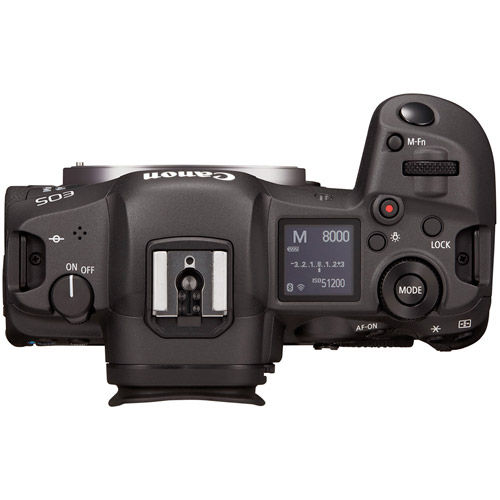
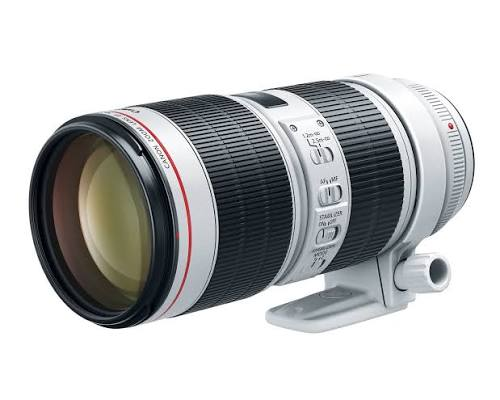
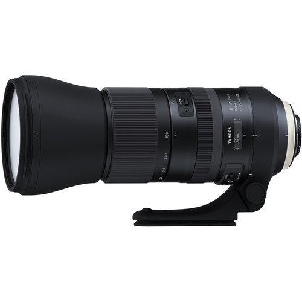
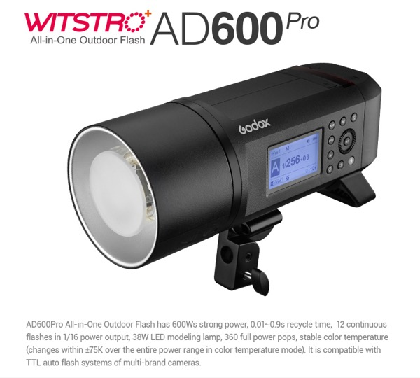
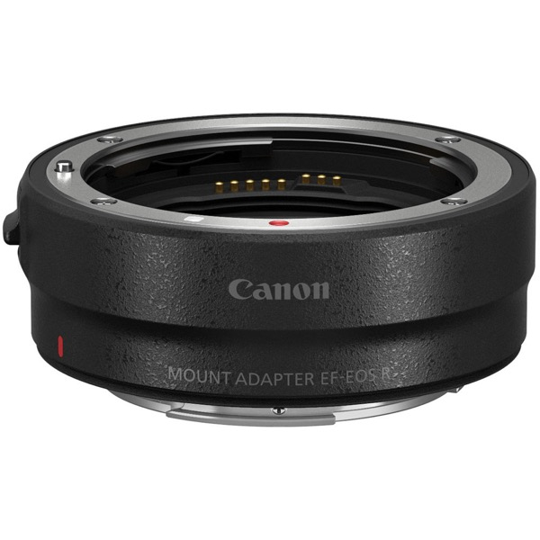

Squamish • Whistler • Sea to Sky
Rent the same pro camera bodies, lenses and lighting I use on commercial shoots across the Sea to Sky. Pick up in Squamish and take it anywhere from Vancouver to Whistler and Pemberton — booked online through Rented Local.
Browse & Book on Rented Local
45MP full-frame mirrorless body with 8K video — ideal for weddings, real estate and adventure shoots
$150 / day
Fast telephoto zoom for action sports, events and portraits
$65 / day
Super telephoto for wildlife, eagles in Brackendale and bike races
$50 / day
600Ws battery-powered location strobe for on-mountain and outdoor portraits
$60 / day
Run EF glass on Canon RF bodies with autofocus
$10 / dayPrices and availability are live on my Rented Local profile, where you can also find more camera, outdoor and event gear rentals in Squamish and Whistler.
Skip the drive into Vancouver for a lens. This gear lives in Squamish, right in the middle of the Sea to Sky corridor — 45 minutes from Whistler, an hour from Vancouver, and close to everything in between.
It's the kit I use for brands like Arc'teryx, Red Bull and Teton Gravity Research, so it's built for real outdoor work: mountain biking in Squamish and Whistler, ski and snowboard shoots, weddings, real estate, wildlife in Brackendale and events around the corridor.
Everything on this page is available to rent in Squamish, BC, and booked online through Rented Local.
$150 CAD per day. Lenses start at $50 per day and the Godox AD600 Pro strobe is $60 per day.
Pick your dates and book on Rented Local, a peer-to-peer rental marketplace for the Sea to Sky. Then pick the gear up in Squamish.
Yes — add the RF to EF adapter ($10 per day) to run the 70-200 or Tamron 150-600 with autofocus.
If you'd rather have the gear and the person behind it, I'm available for photo and video work.
Get In Touch